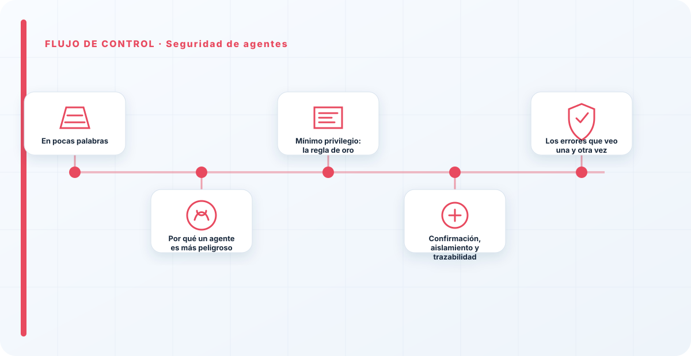
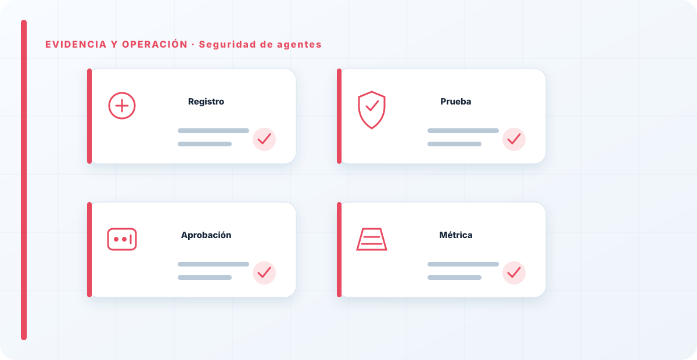

En pocas palabras
Un agente de IA no solo responde: actúa. Usa herramientas, ejecuta acciones, encadena pasos para lograr un objetivo. Y eso cambia el juego de la seguridad por completo, porque un LLM que se equivoca dice una tontería, pero un agente que se equivoca —o que alguien secuestra— hace una tontería: borra datos, manda correos, ejecuta código, mueve dinero. La regla que gobierna absolutamente todo aquí es el mínimo privilegio: el agente solo debe poder tocar lo que estrictamente necesita, y nada más.
Por qué un agente es más peligroso
El salto de "responder" a "actuar" multiplica el impacto de cualquier fallo. Una inyección de prompt en un chatbot te da una respuesta manipulada, molesta pero contenida; la misma inyección en un agente con acceso a tus sistemas puede convertirse en acciones reales sobre tus datos y tu infraestructura. El agente hereda todos los riesgos del LLM —inyección, jailbreak, salida insegura— y les añade los de un sistema con permisos de ejecución. Es la combinación más potente y la más peligrosa que puedes desplegar hoy.
Por eso, con los agentes, no basta con asegurar el modelo: hay que contener lo que el modelo puede hacer. La pregunta que me hago siempre no es "¿se puede secuestrar este agente?" —asumo que sí—, sino "cuando lo secuestren, ¿hasta dónde puede llegar?".
Mínimo privilegio: la regla de oro
Cada herramienta que le doy a un agente es una puerta nueva, así que le doy las mínimas puertas posibles y con el alcance más estrecho. Un agente que resume correos no necesita poder enviarlos; uno que consulta una base de datos no necesita poder modificarla. Recortar el privilegio no es desconfianza gratuita: es diseñar para que el peor día —el del compromiso— sea un día pequeño. El daño que un agente puede hacer es exactamente igual a los permisos que le concediste.

Confirmación, aislamiento y trazabilidad
Sobre la base del mínimo privilegio, añado tres controles. Confirmación humana para las acciones irreversibles o de alto impacto: no todo se automatiza, y hay decisiones que deben pasar por una persona antes de ejecutarse. Aislamiento: el agente ejecuta en un entorno contenido, de forma que un agente comprometido no tenga vía libre hacia la red interna. Y trazabilidad: cada acción queda registrada —qué hizo, con qué parámetros, con qué resultado—, porque sin esa traza, cuando algo va mal, no puedes ni reconstruir qué pasó.
La revisión de las herramientas antes de dárselas —incluidos los MCP— es parte del trabajo, no un extra. Una herramienta que no has revisado es un permiso que has dado a ciegas.
El instinto de la gente con los agentes es darles permisos amplios "para que funcionen bien", y es exactamente al revés. Un agente potente y sin límites no es un asistente, es un incidente esperando. Prefiero un agente que a veces tenga que pedir permiso a uno que pueda hacer cualquier cosa sin preguntar. La comodidad de hoy es la brecha de mañana, y el radio de esa brecha lo decides tú al repartir permisos.
Los errores que veo una y otra vez
- Dar permisos amplios "temporalmente" que se quedan para siempre.
- Automatizar acciones irreversibles sin confirmación humana.
- Ejecutar el agente sin aislamiento, con línea directa a sistemas internos.
- No revisar las herramientas y MCP antes de conectarlas.
- No registrar las acciones, y no poder reconstruir qué pasó.
- Asegurar el modelo y olvidar contener lo que puede hacer.
Cómo lo llevaría a un entorno real
Cuando aterrizo seguridad de agentes en una organización, no empiezo por comprar una herramienta ni por redactar veinte páginas. Empiezo por dibujar qué ocurre hoy: quién solicita el cambio, quién lo aprueba, qué sistemas intervienen, qué datos cruzan el proceso y quién se entera cuando algo falla. Ese dibujo suele descubrir más problemas que cualquier checklist. En seguridad de IA, lo peligroso no es solo carecer de controles; también lo es creer que existen porque alguien los escribió una vez.
Después separo lo imprescindible de lo deseable. Lo imprescindible debe poder comprobarse: un responsable identificado, una regla clara, una evidencia fechada y un mecanismo para reaccionar. En este caso revisaría especialmente identidad del agente, herramientas y memoria. No me vale una respuesta del tipo «lo gestiona el proveedor» o «eso lo mira seguridad». Necesito saber qué persona toma la decisión, con qué información y dentro de qué plazo.
La implantación debe crecer con el riesgo. Un piloto interno puede funcionar con una ficha breve y una revisión manual. Un sistema que afecta a clientes, empleados, dinero o información sensible necesita segregación de funciones, pruebas independientes, monitorización y un expediente mantenido. Mi criterio es sencillo: cuanto más difícil sea deshacer el daño, más fuerte debe ser la barrera antes de producción.
Decisiones que deben quedar por escrito
Hay decisiones que no deberían vivir en una reunión ni en un mensaje de chat. Para seguridad de agentes dejaría documentados el alcance, los supuestos, los límites de uso, las excepciones aceptadas y las condiciones que obligan a detener o reevaluar. El documento no tiene que ser enorme, pero sí debe permitir que otra persona entienda por qué se hizo lo que se hizo.
También registraría quién puede cambiar delegación, quién valida límites de acción y quién recibe las alertas relacionadas con supervisión humana. Cuando esas tres responsabilidades se mezclan, aparece el clásico problema: el mismo equipo construye, aprueba y declara que todo funciona. No siempre se puede separar por completo, sobre todo en organizaciones pequeñas, pero al menos debe existir una revisión por alguien que no dependa del éxito inmediato del despliegue.
Las excepciones merecen un tratamiento propio. Una excepción sin fecha de caducidad acaba convirtiéndose en la arquitectura real. Por eso exigiría motivo, riesgo aceptado, responsable, compensaciones, fecha de revisión y criterio de cierre. Si falta uno de esos elementos, no es una excepción gestionada; es una deuda invisible.

Un ejemplo práctico
Imaginemos que un equipo quiere incorporar seguridad de agentes a un servicio que ya está en producción. La propuesta promete reducir tiempos y automatizar tareas, pero utiliza componentes que cambian con frecuencia. Antes de aprobarlo, pediría una prueba limitada, un inventario de dependencias, un flujo de datos y una definición clara de qué acciones quedan fuera del alcance.
Durante la prueba recogería resultados normales y casos límite. No solo miraría si funciona; comprobaría qué ocurre cuando faltan datos, cambia una versión, se pierde conectividad, llega una entrada manipulada o un usuario intenta superar sus permisos. Ahí es donde se ve si el diseño aguanta. En muchas pruebas felices todo parece seguro porque nadie ha intentado romper la hipótesis de partida.
Si los resultados son aceptables, la salida a producción tendría condiciones: versión fijada, configuración aprobada, logs disponibles, responsables de guardia, procedimiento de rollback y revisión tras las primeras semanas. Si alguno de esos elementos no existe, prefiero retrasar el despliegue. Un día de demora suele ser más barato que investigar después un comportamiento que nadie puede reconstruir.
Qué evidencias guardaría
Para demostrar que el control funciona conservaría evidencias que cuenten una historia completa, no capturas sueltas. La historia debe enlazar necesidad, decisión, implementación, prueba y operación. En seguridad de agentes eso incluye como mínimo la ficha del activo, el diagrama vigente, la configuración aprobada, el resultado de las pruebas y el registro de cambios.
No guardaría información por acumular. Si los logs contienen prompts, documentos, datos personales o secretos, aplicaría minimización, control de acceso y retención. La evidencia debe ayudar a investigar y auditar sin crear una segunda fuga de información. Es frecuente endurecer el sistema principal y dejar un repositorio de evidencias abierto a demasiadas personas.
- Propietario y finalidad de seguridad de agentes, con fecha de revisión.
- Inventario de identidad del agente, herramientas y dependencias asociadas.
- Criterios de aceptación y resultados sobre memoria y delegación.
- Configuración efectiva, versión y aprobación del cambio.
- Alertas, incidentes, excepciones y acciones correctivas cerradas.
Señales de que el control no está funcionando
El primer síntoma es que nadie sabe responder con rapidez quién es el responsable. El segundo es que la documentación describe una versión distinta de la que está operando. El tercero es que las alertas existen, pero llegan a un buzón que nadie revisa. Cuando aparecen esos tres síntomas, el problema no es tecnológico: el control se ha desconectado de la operación.
También desconfío de las métricas demasiado perfectas. Cero incidentes, cero excepciones y cien por cien de cumplimiento pueden significar excelencia, pero con frecuencia significan que no estamos mirando. Prefiero indicadores que enseñen tendencia: tiempo de corrección, antigüedad de excepciones, cobertura de pruebas, cambios sin revisión y reincidencias.
Por último, revisaría el comportamiento después de cada cambio significativo. En IA, una actualización de modelo, dataset, prompt, herramienta, permiso o proveedor puede alterar el riesgo sin cambiar el nombre del servicio. Si el proceso solo reevalúa cuando se crea un proyecto nuevo, se quedará ciego durante la mayor parte de la vida útil.
Mi criterio de cierre
Considero que seguridad de agentes está razonablemente controlado cuando el equipo puede explicar el proceso sin depender de una sola persona, reconstruir una decisión con evidencias y detener el servicio sin improvisar. No busco perfección documental; busco que la organización pueda tomar decisiones repetibles bajo presión.
El cierre no consiste en marcar todas las casillas. Consiste en demostrar que los riesgos relevantes tienen propietario, que los controles se prueban y que las desviaciones producen una acción. Si la evidencia no cambia ninguna decisión, probablemente estamos generando burocracia. Si una decisión importante no deja evidencia, estamos creando fragilidad.
Este enfoque es el que intento mantener en toda CyberLibrary AI: explicar el control de forma que lo entienda negocio, pero con suficiente profundidad para que arquitectura, seguridad, auditoría y operaciones puedan aplicarlo de verdad.
Referencias y marcos relacionados
Contenido educativo y técnico. No sustituye asesoramiento jurídico ni una auditoría formal.